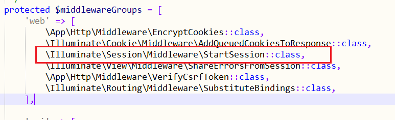

马上要毕业了，找了现在的这家公司，压力不大，自己也比较喜欢，唯一的遗憾就是手机号莫得换了（找不到换的借口）。
进入正题：
之前自己的博客（http://lxiaoke.cn）是用ThinkPHP开发的，公司用的是Laravel，在进行表单验证时，遇到了一个比较简单却又让我头疼了好几天的问题，那就是验证不通过时的错误信息一直获取不到。百度上说什么的都有，最后用下面的方法解决了。
解决办法：
将middlewareGroup中的\Illuminate\Session\Middleware\StartSession::class放到middleware中就好了

是在app/Http/Kernel.php中，改好之后就可以了。（注意在改动之前保证自己的代码正确哦）
Laravel中validater的用法：
1 public function store(Request $request)
2 {
3 $this->validate($request, [
4 'name' => 'required',
5 'password' => 'required',
6 ]);
7 }不要太在意上面的代码，只是简单地举个栗子，手册（Laravel-Validation）中介绍的很详细哦。